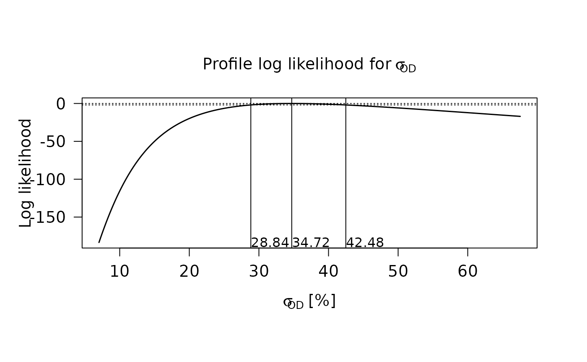

General accessor function for RLum-class objects
Source:R/Luminescence-generics.R, R/RLum.Analysis-class.R, R/RLum.Data.Curve-class.R, and 3 more
get_RLum.RdThe function provides a generalised access point for specific RLum objects. Depending on the input object, the corresponding function will be selected.
Usage
get_RLum(object, ...)
# S4 method for class 'list'
get_RLum(object, class = NULL, null.rm = FALSE, ...)
# S4 method for class 'NULL'
get_RLum(object, ...)
# S4 method for class 'RLum.Analysis'
get_RLum(
object,
record.id = NULL,
recordType = NULL,
curveType = NULL,
RLum.type = NULL,
protocol = "UNKNOWN",
get.index = FALSE,
drop = TRUE,
recursive = TRUE,
info.object = NULL,
subset = NULL,
env = parent.frame(2)
)
# S4 method for class 'RLum.Data.Curve'
get_RLum(object, info.object = NULL)
# S4 method for class 'RLum.Data.Image'
get_RLum(object, info.object = NULL)
# S4 method for class 'RLum.Data.Spectrum'
get_RLum(object, info.object = NULL)
# S4 method for class 'RLum.Results'
get_RLum(object, data.object, info.object = NULL, drop = TRUE)Arguments
- object
RLum (required): S4 object of class
RLumor an object of type list containing only objects of type RLum- ...
further arguments passed to the specific class method.
- class
character (optional): define which class gets selected if applied to a list, e.g., if a list consists of different type of RLum objects, this arguments allows to make a selection. If nothing is provided, all RLum objects are treated.
- null.rm
logical (with default): whether empty and
NULLobjects should be removed.- record.id
numeric or logical (optional): IDs of specific records. If of type
logicalthe entire id range is assumed andTRUEandFALSEindicates the selection.- recordType
character (optional): record type (e.g., "OSL"). Can be also a vector, for multiple matching, e.g.,
recordType = c("OSL", "IRSL")- curveType
character (optional): curve type (e.g. "predefined" or "measured")
- RLum.type
character (optional): RLum object type. Defaults to "RLum.Data.Curve" and "RLum.Data.Spectrum".
- protocol
character (optional): currently ignored.
- get.index
logical (optional): return a numeric vector with the index of each element in the RLum.Analysis object (
FALSEby default).- drop
logical (with default): coerce to the next possible layer (which are RLum.Data objects if
objectis an RLum.Analysis object). Ifdrop = FALSE, an object of the same type as the input is returned.- recursive
logical (with default): if
TRUE(default) when the result of theget_RLum()request is a single object, the object itself will be returned directly, rather than being wrapped in a list. Mostly this makes things easier, but this might be undesired if this method is used within a loop.- info.object
character (optional): name of the wanted info element.
- subset
expression (optional): logical or character masking a logical expression indicating elements or rows to keep: missing values are taken as false. This argument takes precedence over all other arguments, meaning they are not considered when subsetting the object.
subsetworks slots and info elements.- env
environment (with default): An environment passed to eval as the enclosure. This argument is only relevant when subsetting the object and should not be used manually.
- data.object
character or numeric: name or index of the data slot to be returned.
Functions
get_RLum(list): Returns a list of RLum objects that had been passed to get_RLumget_RLum(`NULL`): ReturnsNULL.get_RLum(RLum.Analysis): Accessor method for RLum.Analysis objects. The optional argumentsrecord.id,recordType,curveTypeandRLum.typeallow to limit records by their id (list index number), their record type (e.g.recordType = "OSL"), their curve type (e.g.curveType = "predefined"orcurveType ="measured"), or object type.The selection of a specific RLum.type object superimposes the default selection. Currently supported objects are: RLum.Data.Curve and RLum.Data.Spectrum
Returns:
Single RLum.Data object, if only one object is contained and
recursive = FALSEorRLum.Analysis objects for
drop = FALSE
get_RLum(RLum.Data.Curve): Accessor method for RLum.Data.Curve object. The argumentinfo.objectis optional to directly access the info elements. If no info element name is provided, the raw curve data (matrix) will be returned.get_RLum(RLum.Data.Image): Accessor method for RLum.Data.Image objects. The argumentinfo.objectis optional to directly access the info elements. If no info element name is provided, the raw image data (array) will be returned.get_RLum(RLum.Data.Spectrum): Accessor method for RLum.Data.Spectrum objects. The argumentinfo.objectis optional to directly access the info elements. If no info element name is provided, the raw curve data (matrix) will be returned.get_RLum(RLum.Results): Accessor method for RLum.Results object. The argumentdata.objectallows to access directly objects stored within the slot data. The default return object depends on the object originator (e.g.,fit_LMCurve). If nothing is specified always the firstdata.objectwill be returned.Note: Detailed specification should be made in combination with the originator slot in the receiving function if results are piped.
Returns:
Data object from the specified slot
list of data objects from the slots if 'data.object' is vector or
an RLum.Results for
drop = FALSE.
Author
Sebastian Kreutzer, Institute of Geography, Heidelberg University (Germany) , RLum Developer Team
How to cite
Kreutzer, S., 2025. get_RLum(): General accessor function for RLum-class objects. Function version 0.3.3. In: Kreutzer, S., Burow, C., Dietze, M., Fuchs, M.C., Schmidt, C., Fischer, M., Friedrich, J., Mercier, N., Philippe, A., Riedesel, S., Autzen, M., Mittelstrass, D., Gray, H.J., Galharret, J., Colombo, M., Steinbuch, L., Boer, A.d., 2025. Luminescence: Comprehensive Luminescence Dating Data Analysis. R package version 1.1.1. https://r-lum.github.io/Luminescence/
Examples
## Example based using data and from the calc_CentralDose() function
## load example data
data(ExampleData.DeValues, envir = environment())
## apply the central dose model 1st time
temp1 <- calc_CentralDose(ExampleData.DeValues$CA1)
#>
#> [calc_CentralDose]
#>
#> ----------- meta data ----------------
#> n: 62
#> log: TRUE
#> ----------- dose estimate ------------
#> abs. central dose: 65.71
#> abs. SE: 3.05
#> rel. SE [%]: 4.65
#> ----------- overdispersion -----------
#> abs. OD: 22.79
#> abs. SE: 2.27
#> OD [%]: 34.69
#> SE [%]: 3.46
#> -------------------------------------
#>

## get results and store them in a new object
temp.get <- get_RLum(object = temp1)